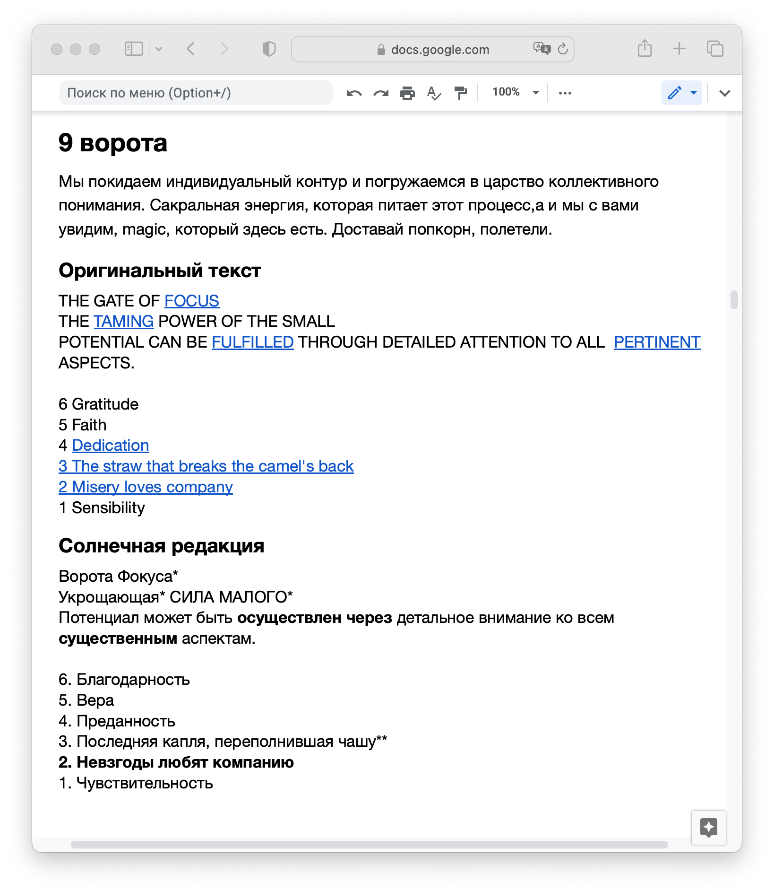
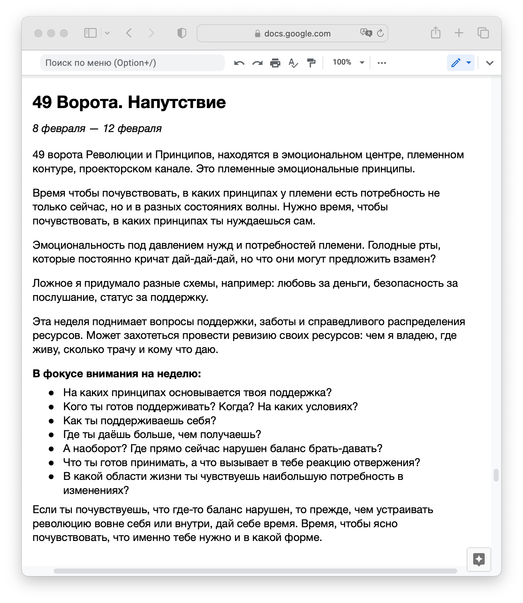

Разбор оригинальных текстов Рэйв И-Цзин
и еженедельные напутствия
Меня зовут Мирра Трубникова, я сертифицированный гид, аналитик и переводчик.
За десять лет работы аналитиком я разобрала тысячи Бодиграфов, провела сотни базовых чтений. В каждом случае есть что-то интересное: неожиданная связь между воротами в Бодиграфе, озарение или наблюдение. Все интересные находки и инсайты я записываю.
Путь Солнца — это закрытый телеграм-канал в котором я разбираю и редактирую перевод названий ворот, линий и заголовков гексаграмм из книги Полный Рэйв И-Цзин, написанной основателем системы Дизайн Человека — Ра Уру Ху. Она предназначена для всех, кто профессионально занимается Дизайном Человека.
Чтобы понимать, о чем этот курс нужно сначала ознакомиться с ссылка на ДЧ.
Всего 64 гексаграммы по 4 в месяц, 4 смысловых поста в неделю, 3 дня выходных. Жестко привязываться к заходу солнца в линию — не будем. Почти половина из них уже написана и готова к отправке, остальные добавляются каждую неделю.
Шаг за шагом в течении Солнечного года мы исследуем:
Кое-что из уже написанного:
Для работы использую оригинальный текст Jovian Archive
Для работы использую оригинальный текст Jovian Archive
Выделяю уточненный вариант перевода
Выделяю уточненный вариант перевода
Часть материала даю в виде подкаста
Подробно разибраю название каждой линии
Все ключевые слова стараюсь объяснить настолько подробно, насколько могу
Еженедельные напутствия и рекомендации на что обращать внимание
Еженедельные напутствия и рекомендации на что обращать внимание
Этот канал — сборник моих наблюдений, переводов и приемов из практики работы аналитиком Дизайна Человека. Буду рада поделиться с теми, кто профессионально занимается Дизайном Человека.
Материалы приходят в виде постов в телеграм-канале один раз в неделю или чаще. Посты можно читать и пересылать друзьям, но нельзя публиковать.
Нет. Посты приходят один раз в неделю или чаще. Вы получите доступ ко всем постам, опубликованным с 21 января 2023 года.
Ответ
Ответ
Домашних заданий нет, сертификаты не выдаются. В любой момент можно задать вопрос в комментариях под постом.
Оплата банковской картой или Яндекс-деньгами. Если вам не нравится рассылка в первый месяц — верну деньги.
Досудебный порядок урегулирования споров обязателен. Все споры — по эл. почте. Если суд признает какой-то пункт оферты недействительным, это не значит, что другие условия тоже не действуют. Мы можем изменить условия оферты, вы сами следите за изменениями.
ИП
ОГРНИП
Эл. почта для связи: